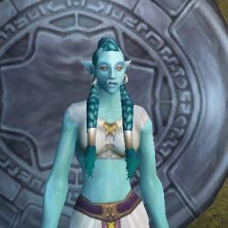

Guildes
Orac'Loa
Hazorash
Sexe : HommeRace : Troll
Faction : Horde
Formation : Guerrier
Plus d'infos sur Hazorash >>>
Nohan
 Age : jeune adulte
Age : jeune adulte
Sexe : Femme
Race : Troll
Faction : Horde
Formation : Guerrier
Description : En posant ses pieds sur le sol de Kalimdor, Naolin'Ja Sidd'Jin devint Nohan. Loin derrière elle, au plus profond des Marais, elle avait abandonné son identité Atal'Aï, sa force légendaire, sa fougue et sa volonté. Mais surtout, on lui avait ôté une part d'elle-même sans laquelle elle se sentait comme nue : sa sagesse, son secret, celui qu'elle portait en elle qui lui déchirait le coeur et ravissait son âme à la fois, celui qui avait fait d'elle l Oracle des Atal'Aï. Une douloureuse cicatrice en forme de rune couvrait désormais son sein gauche.
Nohan avait rejoint les siens, d'autres Atal'Aï déguisés sous d'honteuses identités Darkspears, chargé tous de la même mission : assurer le retour d'Hakkar. Dans ce but, ils fondèrent Orac'Loa, petite école d'enseignements spirituels vaudoo.
Lors de la disparition mystérieuse d'Eter'En leur Guide, et d'autres houngans et mambos, Nohan vit la nécessité d'assurer la notoriété de l?école. Elle laissa sa fougue sur le côté, et devint la sage et posée mambo que l'on connaît. Parcourant les rues d'Orgrimmar, observant du coin de l'oeil les Trolls susceptibles de devenir de loyaux et malléables disciples, s'assurant le respect des plus influents, les conviant à des simulacres de Cérémonies dédiées aux Loas. Sa priorité est devenue autre : réimplanter les traditions vaudoo, le culte des Loas dans le coeur des Trolls. Elle prépare le terrain, soigneusement, méthodiquement. Et malgré les migraines qui la terrassent, elle sourit en l'honneur d'Hakkar.
[Le texte originel était trop long...lisez le dans le Journal]
Plus d'infos sur Nohan >>>
Lire les 10 récits de Nohan >>>
Shanjin
Age : la vingtaineSexe : Femme
Race : Troll
Faction : Horde
Formation : Prêtre
Description : Shanjin de son nom Atal'Aï Atay'a est une jeune mambo qui à l'instar de Lukou prend un malin plaisir à torturer ses offrandes sacrificielles à Hakkar. Très tôt elle fût remarquée par son maître grâce à l'allegresse dans laquelle celle-ci tailladait, démembrait, scarifiait[...] ses victimes pour les soigner, les relever et recommencer de plus belle.
Atay'a est une troll plutôt attirante au caractère changeant au gré de ses humeurs, elle se montre perseverante lorsqu'elle désire quelque chose et n'apprécie particulièrement pas être sous estimée, de plus elle possède un gout prononcé pour la manipulation qui a facilité son entrée dans le projet Orac'Loa.
Elle devait prendre l'identitée de Shanjin, une femelle troll, prêtresse de son état, qui a récemment disparu dans les jungles du Marais des Chagrins dans lesquelles elle s'était rendue pour aider par ses soins les forces de la Horde. Ses jours ont pris fin entre les bras d'un des collecteurs du Temple Englouti d'Atal'Hakkar. Celle-ci était couturière, aucun signe de famille.
Seulement voilà, le bateau pour Kalimdor fit nauffrage et Atay'a n'arriva jamais à bon port.
Plus d'infos sur Shanjin >>>
Lire les 2 récits de Shanjin >>>